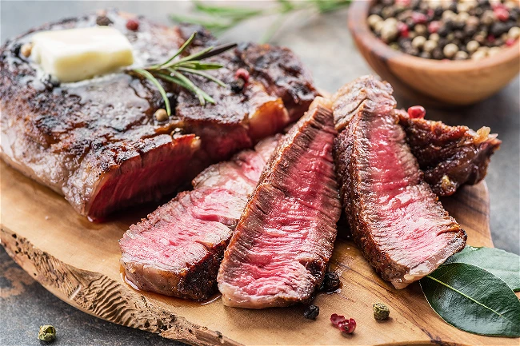

Home
Best Steak Recipe

The art of a perfect Steak
I love the kind of dinner
you can whip up without relying on a recipe.
Truth be told, good cooking is more about mastering
techniques than following recipes,
and the best dishes are often the simplest to make.
A perfectly cooked steak is a prime example.
With just a handful of ingredients and a single pan,
you can prepare a steak that rivals anything
you’d enjoy at a high-end steakhouse.
The secret is mastering the art of pan-searing.
This classic technique involves cooking the surface of your food
undisturbed in a piping hot pan until a crisp,
golden-brown, and flavorful crust forms.
It’s the key to building flavor and texture
in a dish while preventing sticking and giving
your meal a restaurant-quality appearance.
Pan-searing is hands-down the best way to cook a steak.
ingredients
- Fresh cut of Steak
- Salt
- Pepper
- Rosemary
- olive oil
- butter
Steps
- After taking the steak out of the fridge to
bring it too room temperature,
we coat the steak in oil on both sides,
then add plenty of salt and pepper on
both sides of the steak too.
- Add the steak to a very hot pan – preferably cast iron.
- Cook for 4 minutes, turning EVRY MINUTE.
- During the last minute of cooking,
add butter to the pan, plus a few lightly crushed,
peeled garlic cloves and a couple of sprigs of thyme or rosemary.
Baste the the steak with the butter during the last minute of cooking.
- Take out of the pan and leave to rest
for at least 4-5 minutes before serving.
- If you like,
you can serve with a delicious steak sauce
(some ideas below),
or top with some garlic butter.